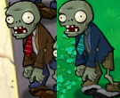
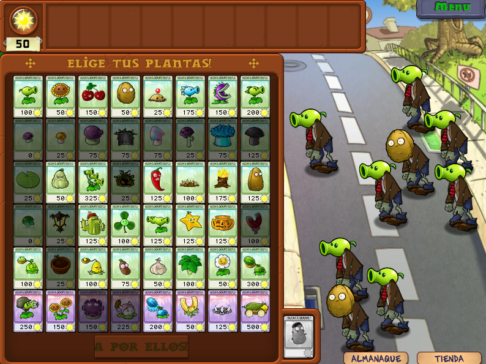
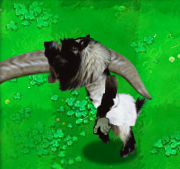
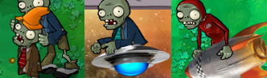
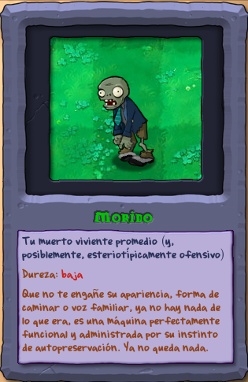
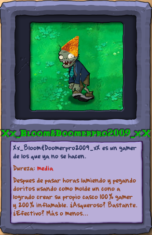

Zombis viejos, trucos nuevos
|
Aquí estamos de nuevo, hoy voy a hablar de los zombis que he modificado tanto en mecánicas como alguno solo en estética.
Primero, ahora los zombis normales tienen algo más de vida y hacen algo más de daño tanto a las plantas, como cuando uno está hipnotizado. Al principio fue difícil cambiar el diseño del zombi básico, así que al final me decante por un cambio de colores, pasando de pantalones azules y chaqueta marrón a chaqueta azul y pantalones marrones, queda sorprendentemente bien, además, también borré los pelos que les quedaban en la cabeza, haciéndolos aún más calvos. |
|  |
|---|
| Comparación. |
|
Por otro lado, estaría el caracono, que ahora lleva un dorito en la cabeza, por que ambos son naranjas y triangulares, y además así hay algo de estética MLG, que nunca viene mal, además hice que en vez de usar la cara del zombi estándar, usará la del zombi con cajita, dándole un aspecto desquiciado. En términos de gameplay, el cono (o dorito) resiste más golpes, a parte de eso, no hay mucho más que contar. De quien si hay más que contar sería el caracubo, que ahora es británico por tener una cabina telefónica en la cabeza, también por que me gusta cómo le cubre la cara por completo, así teniendo una distinción entre las 3 variantes del zombi básico. A parte de que la cabina resiste unos golpes menos que el cubo, es que cuando uno muere generará un zombi Lanzaguisantes detrás de sí, esto es posible gracias a otro script. |
|  |
| Este último viene de un minijuego. |
|
Y hablando de scripts, también estaría el zombi abanderado, al que le puse una bandera de una cosa de Minecraft que surgió cuando jugamos en informática. Ahora, aparte de anunciar las grandes oleadas, al aparecer irá restando de forma constante los soles que tengas almacenados, añadiendo algo de tensión al inicio de cada horda y obligando al jugador a prepararse bien antes de esta. Para terminar con los zombis de la primera escena, estaría el saltador de pértiga, que entra corriendo y tras saltar una planta reduce su velocidad. Ahora salta una segunda vez, saltando de 3 a 5 casillas si se topa con una planta (esto mediante un script), aunque ahora teniendo menos vida. En cuanto a su apariencia... Bueno, es el resultado de hacerle un disfraz con cabra.png... |
|  |
| Sale como cabría esperar... |
|
Además, cambié el sonido de la pértiga por el grito de una cabra, para ya terminar el cuadro, también literalmente, ya que este zombi toma su
nombre del nombre alterno de la obra "El aquelarre" de Francisco de Goya.
Luego, de otras escenas tampoco hay mucho que contar, el zombi portero ahora usa el torso de un zombi del juego original como escudo y con menos vida; y en el cosmos el zombi playero va en platillo volante, el zombi buzo es (casi) invisible y el que tiene un delfín ahora tiene un cohete. |
|  |
| Cuando termine con ellos, hablaré más a detalle. |
|
Tengo varias ideas que no sé si podré lograr implementar, tales como que un par de zombis (Yeti, y con delfín) avancen ignorando al resto de plantas, o alguno que rebote proyectiles, pero hasta que no pueda hacerlos funcionar no mostraré sus entradas en el almanaque, que en el mod es Wikipedia. Que, hablando de eso: |
|  |  |  |
|---|
 |
 |
|---|
| Entrada 1 |
|---|
| Entrada 2 |
| Entrada 3 |
| Sección principal |
| Entrada 5 |